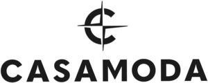

Trade Mark Journal No.2025/048 28 November 2025
WO0000001874010 (18,25,35)
Office of origin: Germany
Date of International Registration:28 May 2025
Date of designation in the UK:
28 May 2025

International priority date claimed: 11 April 2025
(Germany)
- Class 18
- Leather; imitations of leather; goods made of leather and imitations of leather, namely leisure bags, shopping bags, shoulder bags, evening bags, beach bags, school knapsacks, shoulder straps, children's bags, cosmetic bags, suitcases, cosmetic cases, hat cases, attaché cases, pouches, neck pouches, stocking bags, shoe bags, sports bags, satchels; small leather goods, namely card cases [wallets], identity card cases, purses, luggage tags; handbags; baggage; trunks; suitcases; attache cases; travel garment covers; rucksacks; bags; bags for sports; travelling bags; carrier bags; cross-body bags; hipsacks; bucket bags; folio cases; briefcases; pocket wallets; wallets; leather pouches; umbrellas; parasols; walking sticks; saddlery; leather cases, namely credit card cases, driving licence cases, business card cases, time card cases [wallets]; key cases; toiletry bags; travelling sets.
- Class 25
- Clothing; shirts; suits; bathing suits; bathing trunks; blazers; sport coats; trousers; skirts; dresses; blouses; t-shirts; polo shirts; shorts; jackets; cardigans; sweat shirts; sweat jackets; coats; fleece tops; waistcoats; underwear; pullovers; stockings; socks; headgear; baseball caps; hats; caps being headwear; cap peaks; headscarves; footwear; parts of footwear (included in class 25); shoes; sneakers; sandals; boots; inner soles; gloves; belts; pocket squares; neckties; ascots; bowties; scarves; balaclava; bags for sneakers.
- Class 35
- Wholesale and retail services [all services also online], including electronic commerce, teleshopping services, homeshopping services, mail order services, catalogue mail order services and online mail order services, all the aforesaid services also with the aid of electronic means [for example via the internet], in relation to leather, imitations of leather, goods made of leather and imitations of leather, namely leisure bags, shopping bags, shoulder bags, evening bags, beach bags, school knapsacks, shoulder straps, children's bags, cosmetic bags, suitcases, cosmetic cases, hat cases, attaché cases, pouches, neck pouches, stocking bags, shoe bags, sports bags, satchels, small leather goods, namely card cases [wallets], identity card cases, purses, luggage tags, handbags, baggage, trunks, suitcases, attache cases, travel garment covers, rucksacks, bags, bags for sports, bags for sneakers, travelling bags, carrier bags, cross-body bags, hipsacks, bucket bags, folio cases, briefcases, pocket wallets, wallets, leather pouches, umbrellas, parasols, walking sticks, saddlery, leather cases, namely credit card cases, driving licence cases, business card cases, time card cases [wallets], key cases, toiletry bags, travelling sets; wholesale and retail services [all services also online], including electronic commerce, teleshopping services, homeshopping services, mail order services, catalogue mail order services and online mail order services, all the aforesaid services also with the aid of electronic means [for example via the internet], in relation to clothing, shirts, suits, bathing suits, bathing trunks, blazers, sport coats, trousers, skirts, dresses, blouses, t-shirts, polo shirts, shorts, jackets, cardigans, sweat shirts, sweat jackets, coats, fleece tops, waistcoats, underwear, pullovers, stockings, socks, headgear, baseball caps, hats, caps being headwear, cap peaks, headscarves, footwear, parts of footwear, shoes, sneakers, sandals, boots, inner soles, gloves, belts, pocket squares, neckties, ascots, bowties, scarves, balaclavas; advertising; marketing and promotional services; professional business consultancy; business consultancy and advisory services; product demonstrations and product display services also via the internet; collective buying services; import and export services; ordering services; purchasing agency services for others; data processing services [office functions]; office services for electronically collating data; compilation and systematization of data and information in electronic databases; organization of exhibitions for commercial or advertising purposes; organization of trade fairs for commercial or advertising purposes; shop window dressing; public relations services; organization of fashion shows for promotional purposes; services rendered by a franchisor, namely, assistance in the running or management of industrial or commercial enterprises; franchising services providing marketing assistance; promotion of goods and services through sponsorship.
CASAMODA Verwaltungs KG
Representative: RUTTENSPERGER LACHNIT TROSSIN GOMOLL PATENT- UND RECHTSANWÄLTE PARTNERSCHAFTSGESELLSCHAFT MBB, Arnulfstraße 58, 80335 München, GERMANY